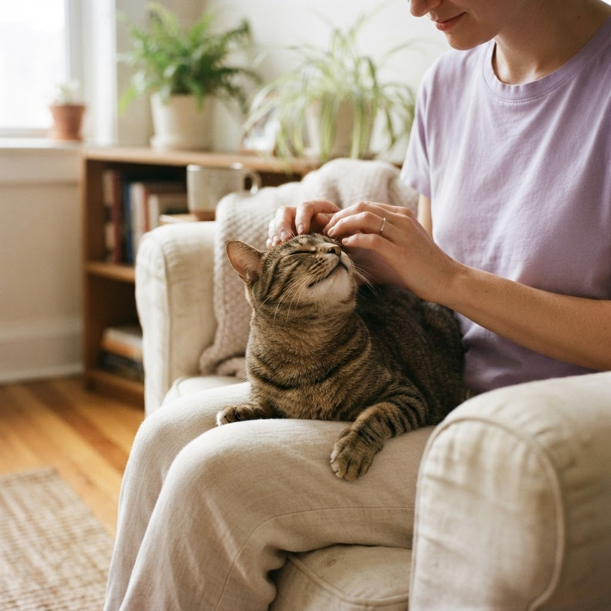

Your pet gets sick. You want to get them care.
Then comes the other question: How much is this going to cost?
You search online, but prices are hard to find. So you start calling vet offices. One says they'll call you back. Another can't give you a price without an exam. Another gives you a number, but you have no idea if it's typical.
Meanwhile, you're waiting — and your pet is still sick.

For a lot of us, cost matters.
We're students, families, first-time pet parents, or simply people trying to make everything fit within a budget. Vet visits, tests, medications, and unexpected emergencies add up quickly.
Wanting to know the price doesn't mean you care any less about your pet. It means you're trying to find a way to get them the care they need.
That's why we built Cone.
Cone is a community-powered place to find and compare what people are paying for veterinary care, without all the searching and calling around.
Because when something is wrong with your pet, your time should be spent taking care of them — not tracking down prices.
We think pet care should be easier to navigate, starting with knowing what it costs.